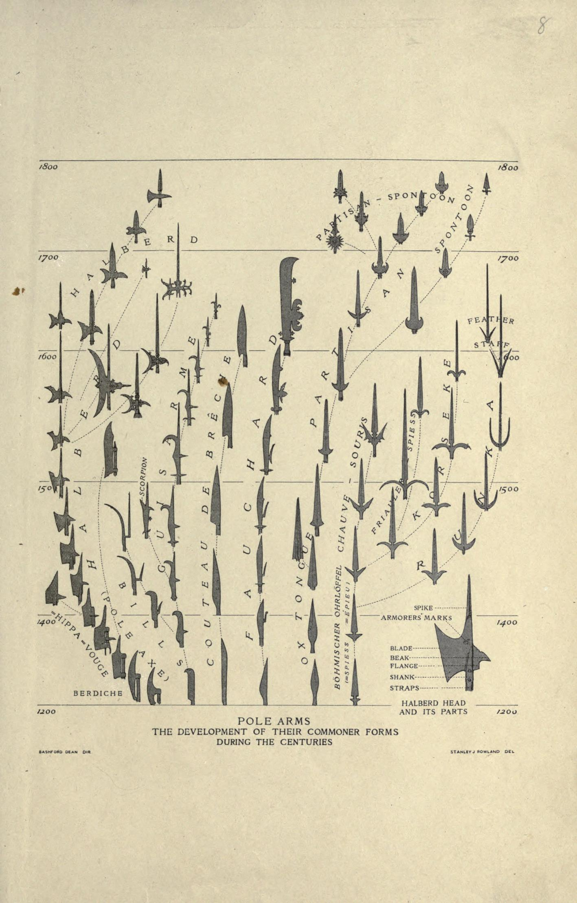
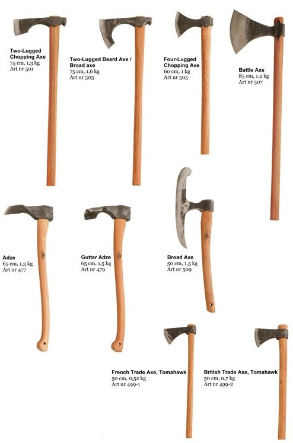
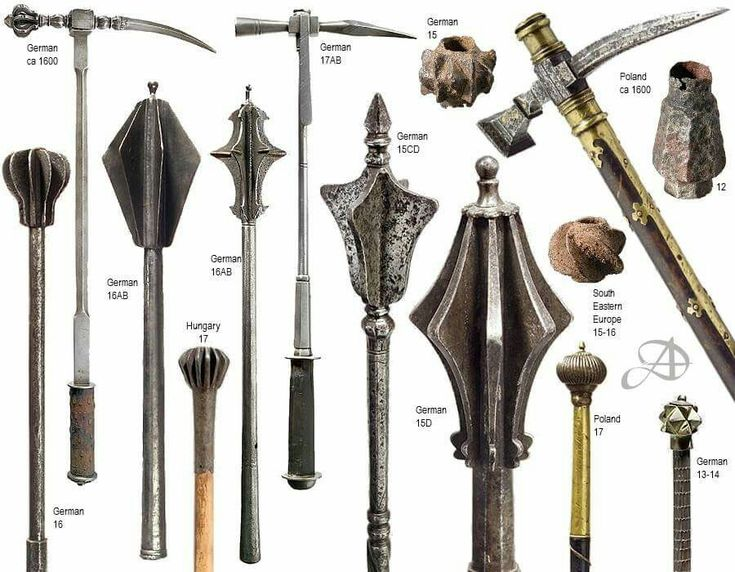
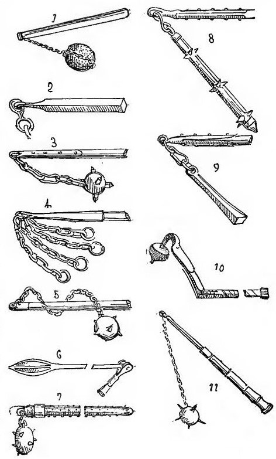
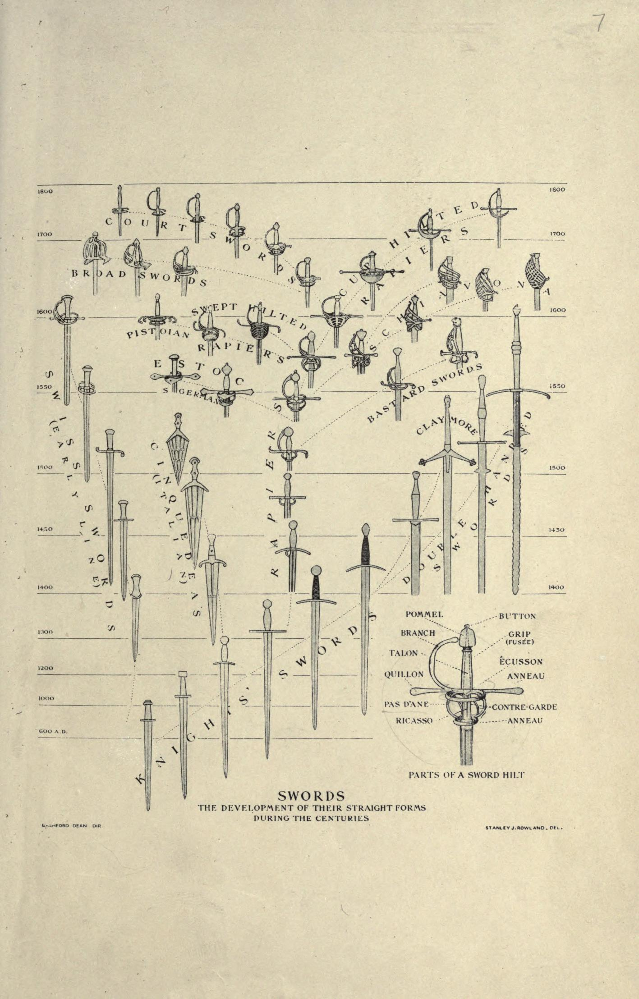
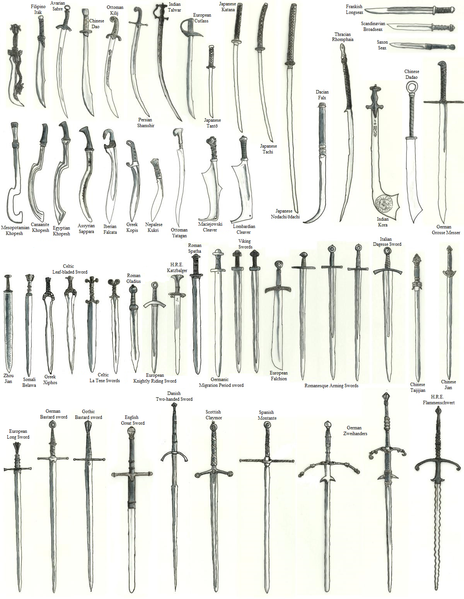
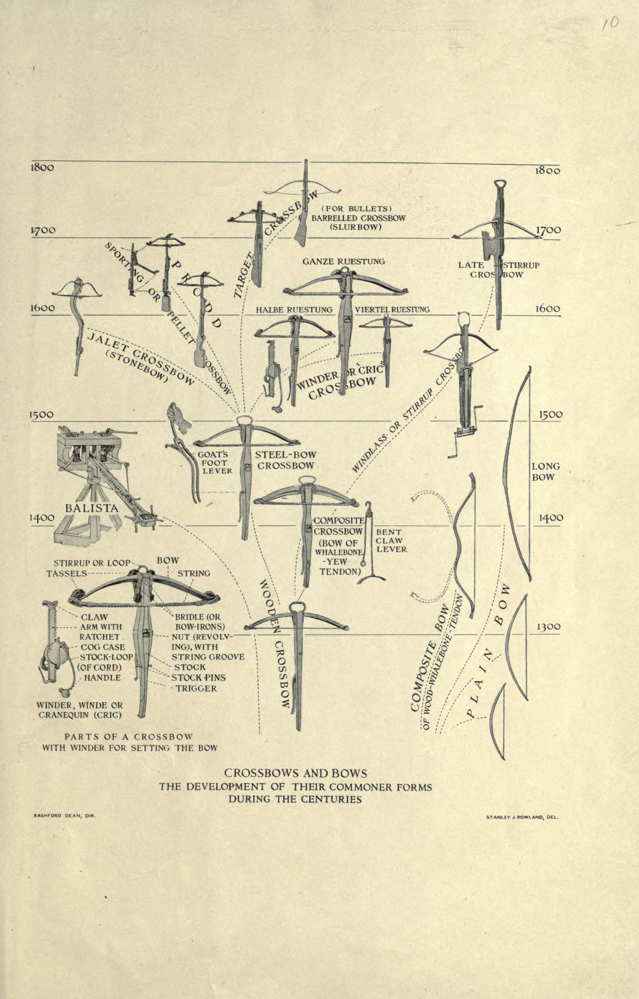
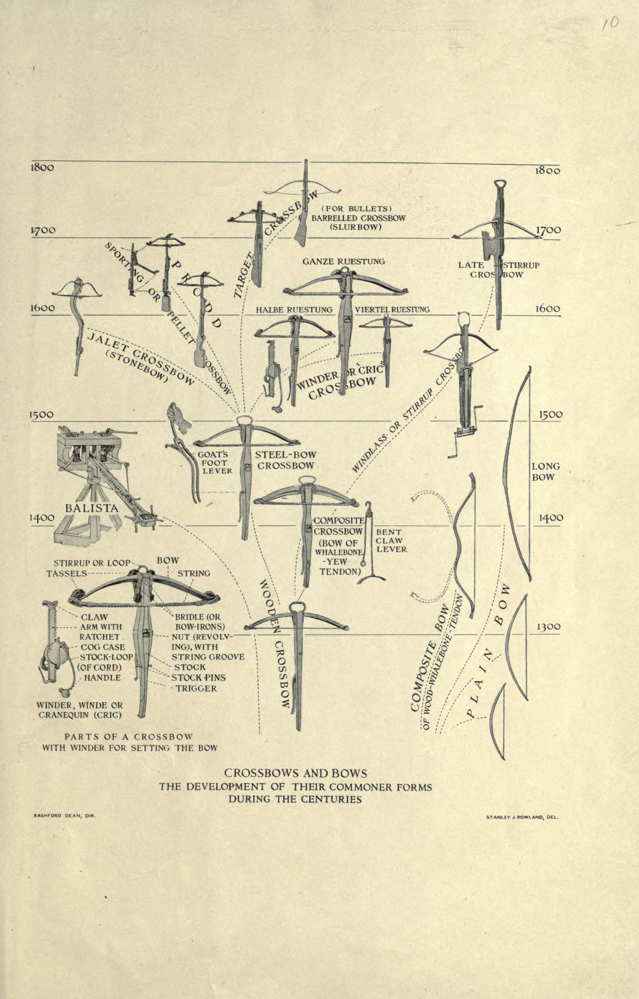

A R M S
In the course of human interaction, conflicts have arisen time and time again, and when the resolution is through violence, it has brought forth the necessity of arms. When the way to seize the grail, whether that be territory, gold, religious and sway, is impeded by another, mankind has invented a multitude of ways to remove the adversary.
Though skill and strategy has as much to do with warfare as the weapons in the hands of the soldiers, this page will focus upon the countless mechanisms of violence that take a plethora of forms over hundreds of years, that all serve unique purposes.
Axes and Polearms
 Image Source: Imgur  Image Source: PinterestPolearms have long been the most common and effective weapon on the battlefield due to their composition being made of largely wood. This not only made them affordable, but lighter to carry as well. The axe is defined as a weapon derived from the wood cutting tool that has a rigid head (oftentimes a wedge) attached to a haft. Axes had heads heavy enough to heavily damage armor, though they lacked the speed and defensive capability of a sword, a user would often make up for that with a shield. Axes were often effective against lightly armored foes.
Many polearms were conceived through the the weaponization of farming tools such as the pitchfork or scythe. They were easy for smiths to make as they only required the head to be made of a rigid material (oftentimes metal). These weapons were more familiar to the average person in almost any given historical period due to their similarity with tools that the common person would use on a daily basis. Just like a tool, more complex polearms were often an all-in-one kind of affair with arms such as the halbred having a sharp spearhead, a hook to dismount horsemen, and an axehead on the opposite side for cleaving. The polearm is perhaps the weapon with the most forms from all over the world with so many kinds of heads for piercing, slashing, pulling, blunt force and more. They were not only effective for soldiers on foot but the choice of many horsemen as well as the speed of the horse would allow the lance or spear to do its damage without the need of adding extra force.
Maces, Hammers, and Flails
 Image Source: Pinterest  Image Source: PinterestMaces and hammers earn their reputation by being deadly against heavily armored opponents, these weapons are derived from far more simple bludgeoning weapons that have been used for thousands of years. On the other hand, the historical presence of flails is often debated as their rarity and lack of effectiveness makes historians dubious. Flails were also derived from farming tools, meant to seperate grain from their husks.
These weapons are often sport a metal head, and metal or wooden haft. The mace and hammer's concussive power is able to damage a user of plate armor, even through the plate, potentially killing them by blunt force trauma. In battle, these weapons were effective in close quarters as much as swords were, while not needing the user to focus on striking with a certain edge to be effective. Many variants are derived from the mace including the spiked morning star and the ironically named holy water sprinkler. Though the flail was rare and only seen in peasant rebellions in Europe, it is more common in Eastern martial arts practices in forms such as nunchaku and the two-sectioned staff. Percussive weapons in Europe were often symbols of authority and power as well such as the judicial gavel or the royal scepter.
Swords and Daggers
 Image Source: Imgur  Image Source: PinterestSwords have long been symbolic of warfare and strife. In ancient times, the scarcity of metal would make swords be items of legend and thus important people such as early king and chieftains would wear them at their hips. Even after advances in mining, the sword would still hold great significance in many cultures due to the weapon requiring time dedicated to learning the skillset associated with the sword. On the other hand, daggers were often associated with the darker side of warfare, being easily hidden, they are notorious for being used in assassinations and grappling.
A sword consists of a long blade entirely made of a rigid metal and is able to cut, slash, and pierce. It is a fast weapon that can attack in many forms and thus was the choice in duels and had entire combat manuals and schools dedicated to it. On the battlefield, a sword would be useful in close quarters when the spear could no longer be effective, and when the melee became within arm's reach, daggers would find their home being able to be easily maneuvered through armor gaps, slits, and weak points. The purpose of daggers was always to kill. There has long been a romance with swords due to the admiration of the fine metalworking and the assumed skill of the wielder, even into the modern era, swords could be seen at the hips of officers and rankers denoting their importance. On the other hand, daggers are often associated with the shadows and the threat on the lives of those important people on and off of the battlefield.
Crossbows, Longbows and Guns
 Image Source: imgur
 Image Source: Imgur
Image Source: imgur
 Image Source: Imgur
Missile weapons can be summed up quite simply, "I need to attack the enemy, but the distance between us does not allow it." From throwing weapons, slings, slingshots, bows, crossbows, guns, catapults, trebuchets and cannons, all of these weapons are meant to break the defenses of the adversary from afar. Although it is proven that thick plate armor is nearly impervious to bows (save the eye slits) they were incredibly effective in wounding over 80% of the other soldiers. Siege missiles such as catapults, ballistae, trebuchets, and cannons were effective in both chipping away at enemy fortifications and breaking formation of the soldiers.
These weapons are often made of wood and fibers and fire various projectiles that are often tipped with metal to damage the target. Most of these (except for gunpowder missiles such as cannons and guns) operate using the principle of torsion, where force is placed upon the projectile, and subsequently released, which sends it forward. Large projectiles for catapults and other siege weapons were boulders, were often procured locally during sieges either from nature or deconstructed buildings and either carved into shape by carvers or covered in mud or clay to make them the desired spherical shape. Projectiles also utilized the elements as well, with incendiary ammunition, poison, diseased carcasses, and all sorts of gruesome and unhygienic objects being launched.